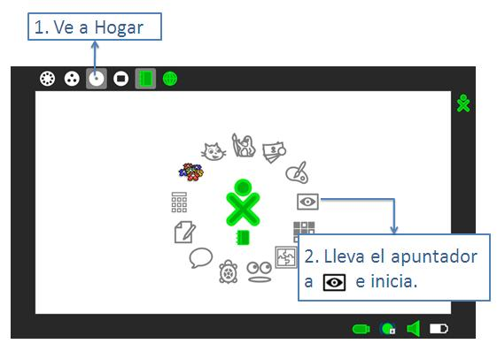
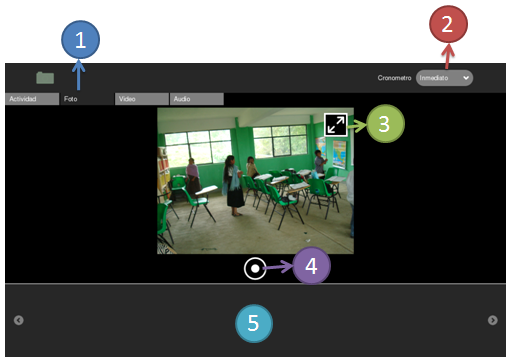

Computadora
Actividades
Grabar
Grabar es un programa que sirve para tomar fotografías, también puedes tomar video y grabar sonido.
¿Cómo abrirlo?

¿Para qué sirven las cosas de la pantalla?

Después de tomar una fotografía, esta les aparecerá en la parte inferior de la pantalla (Punto 5). Al hacer clic sobre esta imagen, aparecerá en grande, así como se muestra a continuación:

El título sirve para que le pongan un nombre a la fotografía, esto es importante para luego poder reconocerla.
Al elegir i aparecerá otra pantalla donde se podrá ver quien tomó la fotografía y cuando.